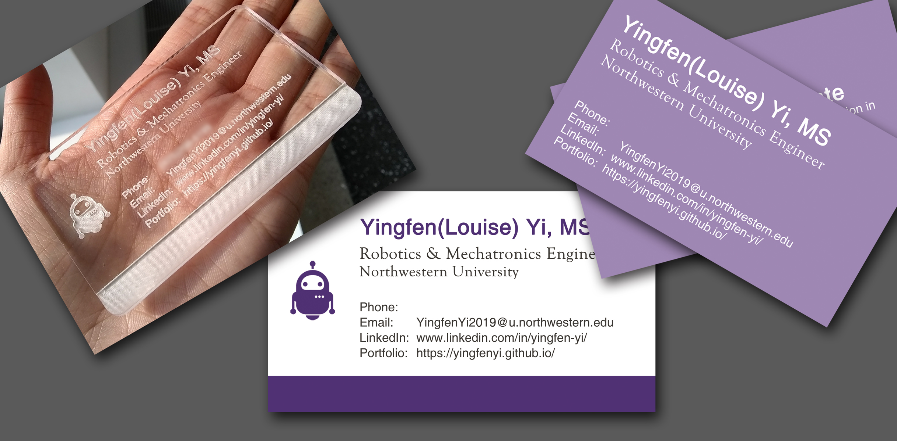

Business Card
With Laser-cut
Introduction
After designing the business card for single-sided style and double-sided style, I suddenly realized that I could apply laser-cut to it, just as what I've done in other projects, to get a cooler version.
Skills Involved
- Laser-cut
- Photoshop
How It Works
If you also want to make an acrylic business card, firstly you need to make sure your design can be converted into black and white and still looks good.
A business card similar to the left two (with multiple colors or transitional edges) is not suitable for laser-cut, while a business card similar to the rightmost one can be easily converted. Considering the precision of laser-cut, simple shapes and vector graphics are highly recommended.

Bad example: Multiple colors

Bad example: Transitional edges

Good example: Simple colors and clear shapes
Then think about which sections you want them to be engraved, and which sections you want them to be cut through. Refer to this website to get some inspiration.
According to different cutting requirements, separate your design into multiple layers.
TBC ...